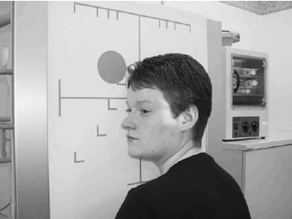

Sella Turcica
Centering point:2.5 cm vertically
above a point 2.5 cm along the baseline from the auditory
meatus nearer the X-ray tube

Cassette Size:24 x 30cm (10 x 12ins) Potrait
Exposure Factors:70kVp on 20MaS
FFD:100cm
Pathologies:#(Fracture), Trauma, FB(Foreign body),Idiopathic
Position of patient and cassette
- The patient sits facing the erect Bucky and the head is then
rotated, such that the median sagittal plane is parallel to the
Bucky and the inter-orbital line is perpendicular to the Bucky.
- The shoulders may be rotated slightly to allow the correct
position to be attained. The patient may grip the Bucky for
stability.
.
- The head and Bucky heights are adjusted so that the centre of
the Bucky is 2.5 cm vertically above a point 2.5 cm along the
baseline from the external auditory meatus.
- A radiolucent pad may be placed under the chin and face for
support.